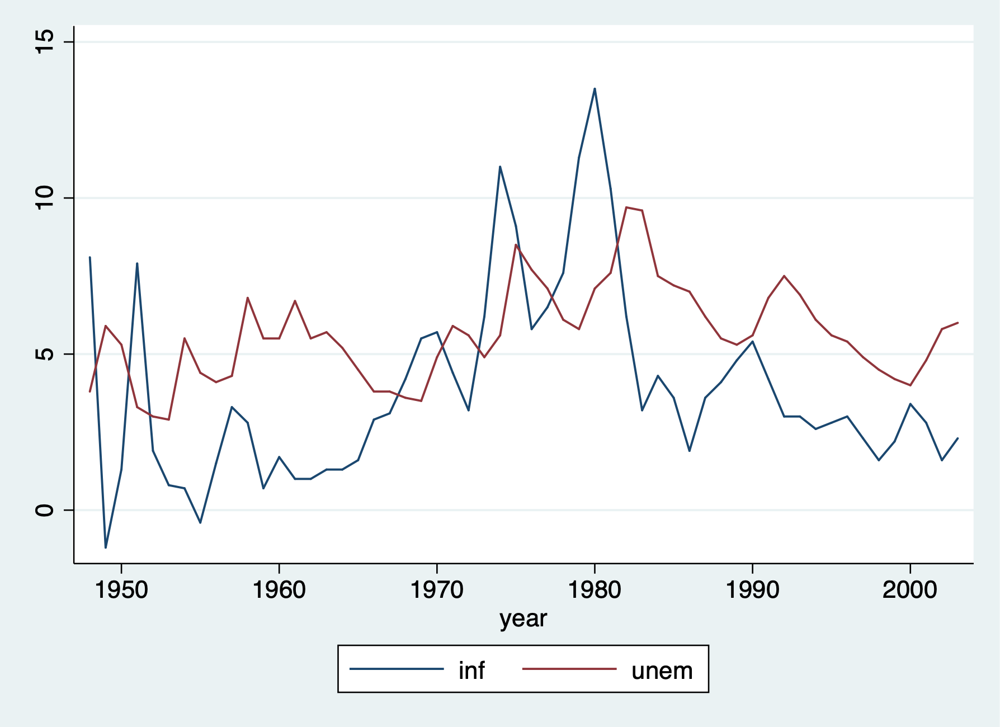
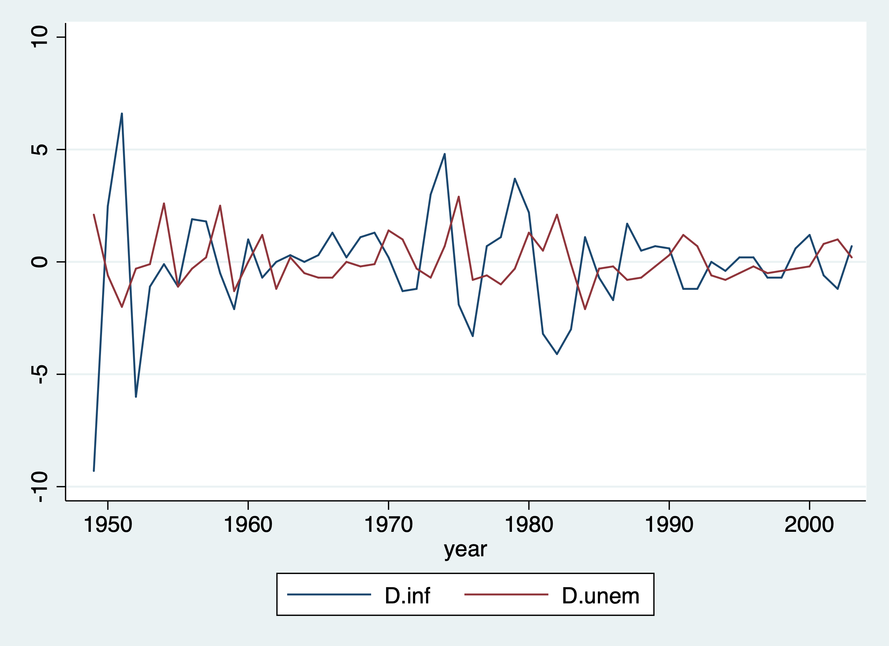
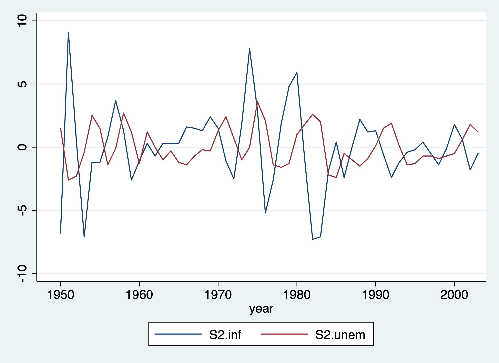

Chapter 1 Static Models
1.1 Static Philips Curve
Lesson: Problematic analysis with a static model between inflation and unemployment
Set the Time Series
cd "/Users/Sam/Desktop/Econ 645/Data/Wooldridge"
use phillips.dta, clear
tsset year, yearly
reg inf unem if year < 1997/Users/Sam/Desktop/Econ 645/Data/Wooldridge
time variable: year, 1948 to 2003
delta: 1 year
Source | SS df MS Number of obs = 49
-------------+---------------------------------- F(1, 47) = 2.62
Model | 25.6369575 1 25.6369575 Prob > F = 0.1125
Residual | 460.61979 47 9.80042107 R-squared = 0.0527
-------------+---------------------------------- Adj R-squared = 0.0326
Total | 486.256748 48 10.1303489 Root MSE = 3.1306
------------------------------------------------------------------------------
inf | Coef. Std. Err. t P>|t| [95% Conf. Interval]
-------------+----------------------------------------------------------------
unem | .4676257 .2891262 1.62 0.112 -.1140213 1.049273
_cons | 1.42361 1.719015 0.83 0.412 -2.034602 4.881822
------------------------------------------------------------------------------Our result do not suggest a trade off between inflation and unemployment, and potentially suggest a positive relationship. This is likely a misspecified model and does not best describe the short-run trade-off between inflation and unemployment. We’ll look at an augmented Phillips curve that better describes the relationship.
Let’s graph our time series
twoway line inf year, title("Annual Inflation Rate")
graph export "/Users/Sam/Desktop/Econ 645/Stata/week_10_inf_line.png", replace
We can use tsline as well.

We can take the difference in the time series as well. Use the s. operator instead of d.. While s1 and d1 will produce similar results, s2 and d2 will not produce the same results.
tsline s.inf s.unem
graph export "/Users/Sam/Desktop/Econ 645/Stata/week_10_ts_Dinfemp.png", replace
Caution: \[ D2. \neq S2. \] It is not recommended to use d. beyond the first difference. Use the S12. operator If you are interested in \[ x_{t}-x_{t-12} = \Delta x \] D2 gives the difference in differences (not the research design. Such that the D2.operator calculates: \[ D2 = x_{t} - x_{t-1} - (x_{t-1}-x_{t-2}) \] \[ S2 = x_{t} - x_{t-2} \]
We can take the 12-month difference in the time series as well.
tsline s2.inf s2.unem
graph export "/Users/Sam/Desktop/Econ 645/Stata/week_10_ts_D12infemp.png", replace
1.2 Inflation and Deficits on Interest Rates
Lesson: some static models explain time-series better than the prior model
Looking inflation and deficits on interest rates, our model is: \[ i3_t = \beta_0 + \beta_1 inflation_t + \beta_2 deficitpct_t + u_t \] Where
- i3: the 3-month T-bill rate
- inf: the annual inflation rate from CPI
- def: is the federal budget deficit as a percentage of GDP
Set the Time Series
cd "/Users/Sam/Desktop/Econ 645/Data/Wooldridge"
use intdef.dta, clear
tsset year
reg i3 inf def if year < 2004/Users/Sam/Desktop/Econ 645/Data/Wooldridge
time variable: year, 1948 to 2003
delta: 1 unit
Source | SS df MS Number of obs = 56
-------------+---------------------------------- F(2, 53) = 40.09
Model | 272.420338 2 136.210169 Prob > F = 0.0000
Residual | 180.054275 53 3.39725047 R-squared = 0.6021
-------------+---------------------------------- Adj R-squared = 0.5871
Total | 452.474612 55 8.22681113 Root MSE = 1.8432
------------------------------------------------------------------------------
i3 | Coef. Std. Err. t P>|t| [95% Conf. Interval]
-------------+----------------------------------------------------------------
inf | .6058659 .0821348 7.38 0.000 .4411243 .7706074
def | .5130579 .1183841 4.33 0.000 .2756095 .7505062
_cons | 1.733266 .431967 4.01 0.000 .8668497 2.599682
------------------------------------------------------------------------------This static model better explain interest rates based on basic macroeconomics. Both contemporaneous variables explain current interest rates. A 1 percentage point increase in the inflation rate leads to a 0.6 percentage point increase in the nominal interest rate. A 1 percentage point increase in the deficits as a percentage of GDP leads to a 0.5 percentage point increase in nominal interest rates.
1.3 Puerto Rican Employment and Minimum Wage
We’ll look at the association between employment and minimum wage in Puerto Rico. Our model will be: \[ lprepop_t = \beta_0 + \beta_1 lmincov_t + \beta_2 lusgnp + u_t \] Where
- ln(prepop): the natural log of the employment to population ratio in PR
- ln(mincov): natural log of the importance of minimum wage relative to average wages or mincov=average minimum wage/average wages)*average coverage rate or people actually covered by the minimum wage law
- lusgnp: natural log of US GNP
Set Time Series
cd "/Users/Sam/Desktop/Econ 645/Data/Wooldridge"
use prminwge, clear
tsset year
reg lprepop lmincov lusgnp if year < 1988/Users/Sam/Desktop/Econ 645/Data/Wooldridge
time variable: year, 1950 to 1987
delta: 1 unit
Source | SS df MS Number of obs = 38
-------------+---------------------------------- F(2, 35) = 34.04
Model | .211258366 2 .105629183 Prob > F = 0.0000
Residual | .108600151 35 .003102861 R-squared = 0.6605
-------------+---------------------------------- Adj R-squared = 0.6411
Total | .319858518 37 .008644825 Root MSE = .0557
------------------------------------------------------------------------------
lprepop | Coef. Std. Err. t P>|t| [95% Conf. Interval]
-------------+----------------------------------------------------------------
lmincov | -.1544442 .0649015 -2.38 0.023 -.2862011 -.0226872
lusgnp | -.0121888 .0885134 -0.14 0.891 -.1918806 .167503
_cons | -1.054423 .7654065 -1.38 0.177 -2.60828 .4994351
------------------------------------------------------------------------------Our results show that there is a tradeoff between the employment ratio and the importance of minimum wage. A one percent increase in importance of minimum wage the employment-population ratio declines .154 percent.
1.4 Antidumping Filings and Chemical Imports
The barium industry in the U.S. complained to the International Trade Commission that China was dumping (or selling imports at lower prices to undercut domestic producers). First, are imports unusually high before the complaint? Second, do imports change after the dumping complaint?
Our model is the \[ lchnimp_t = \beta_0 + \beta_1 lchempi_t + \beta_2 lgas_t + \beta_3 lrtwex_t +\beta_4 befile6_t + \beta_5 affile6_t + \beta_6 afdec6 + u_t \]
Where
- lchnimp: natural log of the volume of Chinese imports of barium chloride
- lchempi: natural log of domestic chemical production index
- lgas: natural log of gasoline production
- lrtwex: natural log of the exchange rate index
- befile6: binary for 6 months before a complaint filing
- affile6: binary for 6 months after a complaint filing
- afdec6: binary for 6 months after a positive decision
Set Time Series Monthly
cd "/Users/Sam/Desktop/Econ 645/Data/Wooldridge"
use barium.dta, clear
tsset t, monthly
reg lchnimp lchempi lgas lrtwex befile6 affile6 afdec6/Users/Sam/Desktop/Econ 645/Data/Wooldridge
time variable: t, 1960m2 to 1970m12
delta: 1 month
Source | SS df MS Number of obs = 131
-------------+---------------------------------- F(6, 124) = 9.06
Model | 19.4051607 6 3.23419346 Prob > F = 0.0000
Residual | 44.2470875 124 .356831351 R-squared = 0.3049
-------------+---------------------------------- Adj R-squared = 0.2712
Total | 63.6522483 130 .489632679 Root MSE = .59735
------------------------------------------------------------------------------
lchnimp | Coef. Std. Err. t P>|t| [95% Conf. Interval]
-------------+----------------------------------------------------------------
lchempi | 3.117193 .4792021 6.50 0.000 2.168718 4.065668
lgas | .1963504 .9066172 0.22 0.829 -1.598099 1.9908
lrtwex | .9830183 .4001537 2.46 0.015 .1910022 1.775034
befile6 | .0595739 .2609699 0.23 0.820 -.4569585 .5761064
affile6 | -.0324064 .2642973 -0.12 0.903 -.5555249 .490712
afdec6 | -.565245 .2858352 -1.98 0.050 -1.130993 .0005028
_cons | -17.803 21.04537 -0.85 0.399 -59.45769 23.85169
------------------------------------------------------------------------------We see that imports are not higher 6 months before a complaint, and imports are not lower 6 months after a complaint. However, imports are lower 6 months after a positive decision in a complaint by the ITC. The impact is fairly large and imports of barium chloride fall about 43.2% after a positive decision.
Also notice that rtwex is positive, and we would expect that a stronger dollar increase demand for imports, which is about uni-elastic.
-43.163985